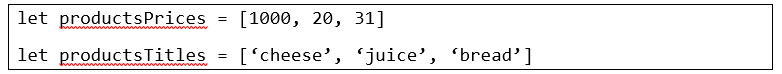

Дано масив, який містить оцінки з К предметів. Знайти середній бал і з’ясувати до якої категорії він відноситься (відмінник, двійочник (має хоча би одну двійку), хорошист (оцінки добре і відмінно), трійочник(є хоча би одна трійка)).
Дано масив, який зберігає кількість відвідувачів магазину протягом тижня. Вивести на екран:
• номери днів, протягом яких кількість відвідувачів була меншою за 20;
• номери днів, коли кількість відвідувачів була мінімальною;
• номери днів, коли кількість відвідувачів була максимальною;
• загальну кількість клієнтів у робочі дні та окремо загальну кількість клієнтів на вихідних.
Дано масив імен учнів. З’ясувати скільки разів зустрічається ім’я «Іван».
Дано послідовність номерів автомобілів. Підрахувати кількість номерів, які :
• починаються на букву «А»;
• перша і остання літери співпадають;
• складаються з більше ніш 5 символів;
Задача 5. Дано послідовність оцінок учня. Підрахувати кількість:
1) двійок
2) кількість хороших оцінок (добре, відмінно);
3) кількість оцінок, які нижче середнього.
Дано послідовність цін товарів та назв (у окремих масивах). Вивести на екран ті, які може собі дозволити користувач (кількість грошей задається). Приклад збереження даних
Дано послідовність платіжок протягом року. Знайти сумарну кількість грошей за:
1) за весь рік;
2) у першій половині року;
3) у другій половині року;
4) за літо;
5) за ІІ квартал;
6) за парні місяці (з парними номерами);
7) за місяці, які є початковими у сезоні (весна, літо, осінь, зима).
Дано одновимірний масив, у якому зберігається певна виграшна сума (елементи заповнюються випадковим чином значеннями від -500 до 500). Надаючи користувачу можливість вибирати номери елементів (поки він не відмовиться). Знаходити сумарний виграш.
Морський бій. Користувач вводить кількість клітинок одновимірного масиву та кількість одиночних кораблів. Комп’ютер довільно розміщує ці одиночні кораблі у масиві по один у клітинці (якщо у клітинці 0, то клітинка пуста, якщо 1 – то це означає, що там є корабель). Користувач вводить номер клітинки, куди стріляє. Гра продовжується до тих пір, поки не будуть потоплені усі кораблі.